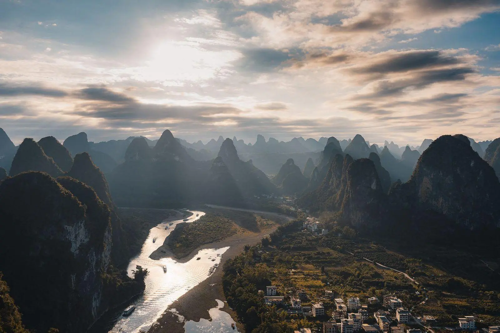
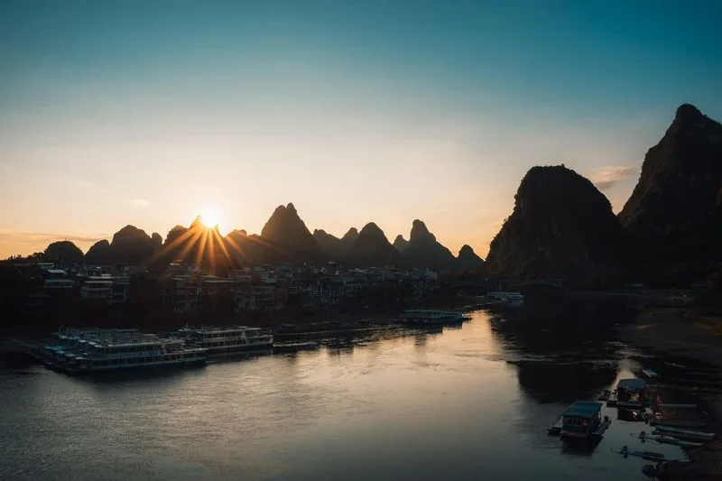
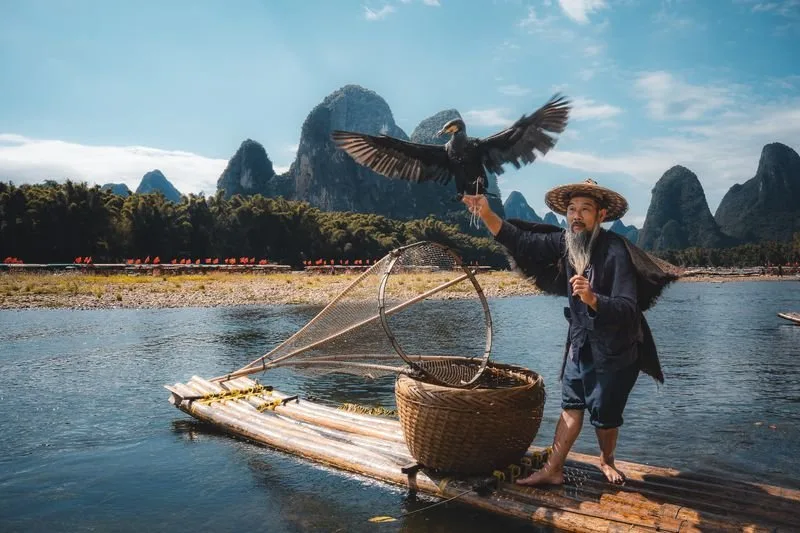
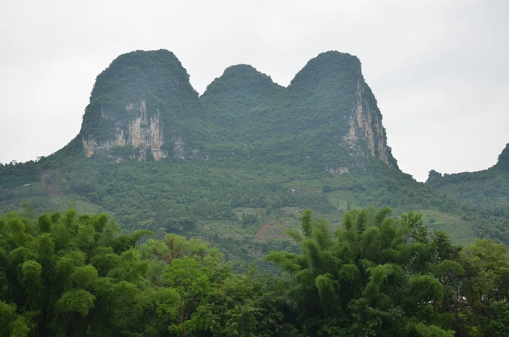
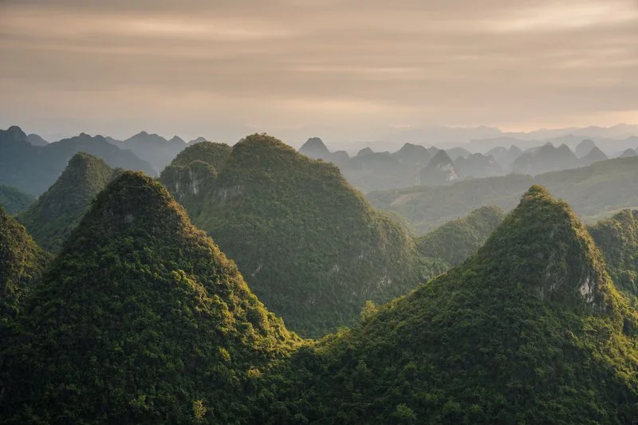
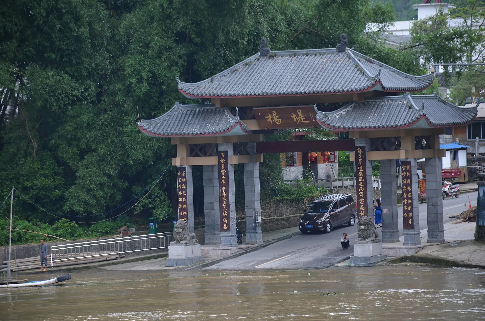
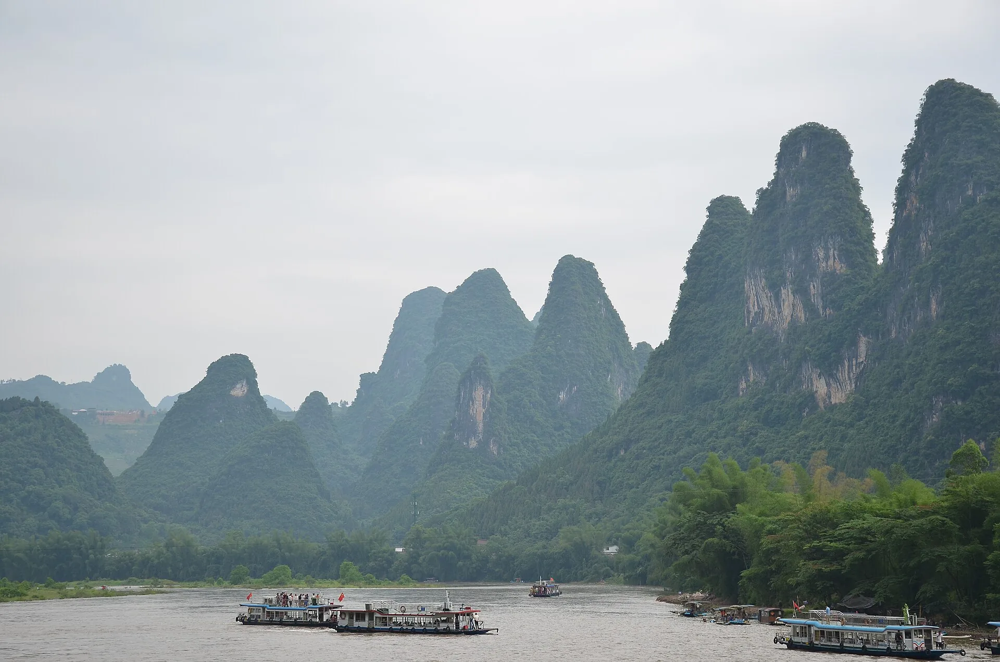

Li River Panorama
漓江 · Karst peaks from above
A sweeping aerial view of the river winding through sugar-loaf limestone towers — the classic Guilin landscape.

漓江 · Where Karst Peaks Meet the Water
Cruise 83 kilometers through the heart of Guilin’s otherworldly limestone landscape — the view that graces China’s 20-yuan banknote, and the journey that has inspired poets and painters for a thousand years.
At a glance
The Li River (漓江) flows 83 km from Guilin to Yangshuo through one of the world’s most extraordinary karst landscapes — a UNESCO World Heritage candidate of limestone towers, bamboo groves, and water buffalo-dotted banks. The 4–5 hour cruise from Guilin to Yangshuo is the single most famous tourist journey in China, featured on the back of the ¥20 banknote.
If Guilin has one experience that defines it, this is the one. The Li River (漓江) cuts through the world’s largest karst landscape — over 40,000 square kilometers of cone-shaped limestone peaks that rise straight from the water like a Chinese ink painting come to life. For centuries, this stretch of river has been China’s most painted, most photographed, and most written-about landscape.
The classic journey runs from Guilin’s Zhujiang Pier down to Yangshuo — about 83 kilometers (4–5 hours) of floating through scenery that changes every bend: cormorant fishermen on bamboo rafts, water buffalo wading in the shallows, ancient villages tucked between sugar-loaf peaks. The view at Xingping, where the river wraps around a cluster of dramatic karst towers, is the one printed on the ¥20 Chinese banknote.
Quick tip: the cruise is one-way downstream (Guilin → Yangshuo). Most travelers explore Yangshuo’s countryside after disembarking and return to Guilin by bus (about 90 minutes).
The signature sights and experiences that make Li River special.
漓江 · Karst peaks from above
A sweeping aerial view of the river winding through sugar-loaf limestone towers — the classic Guilin landscape.

兴坪码头 · Sunset at the pier
Tour boats dock at Xingping’s waterfront as the sun sets behind the limestone towers — a quiet end to the river journey.

鸬鹚竹筏 · Li River heritage
A traditional cormorant fisherman poles a bamboo raft on the Li River, with karst peaks rising behind him — a scene rooted in centuries of local fishing culture.

兴坪峰丛 · The 20-yuan backdrop
The knife-sharp limestone towers that line the Li River near Xingping, the same peaks that appear on China’s ¥20 note.

相公山 · Sunrise panorama
A high viewpoint above the Li River catches first light on the karst towers and the river’s silver ribbon.
Ways to experience Li River, from the classic route to a quicker highlight.
4–5 hours · Guilin → Yangshuo · ¥300–500
Board at Zhujiang Pier 竹江码头 — about 40 min from Guilin city center.
Cruise past Crown Cave 冠岩 — the first major karst formation.
Nine Horse Fresco Hill Count the horses on the cliff.
20-Yuan note view at Xingping — the cruise slows for photos.
Disembark at Yangshuo Explore West Street, then bus back to Guilin (90 min).
1–1.5 hours · Xingping–Nine Horse · ¥120–255
Get to Xingping Take a bus from Yangshuo (40 min) or Guilin (2 hrs).
Board a 4-seat bamboo raft at Xingping pier — motorized, stable, life jackets provided.
Glide past the 20-yuan view and Nine Horse Hill, the most scenic section.
Return by electric cart included in the ticket.
Apr – May
Warm, green hillsides, light mist — the most photogenic season.
Sep – Nov
Clear skies, crisp air, golden rice fields along the banks.
After rain
Mist swirling around peaks = the classic ink-painting photos.
Book the morning cruise
Morning departures (8:30–9:30 AM) give the best light and the fewest crowds. Afternoon boats can feel rushed.
Bring sunscreen and a hat
The upper deck has no shade, and Guilin’s sun is strong even in spring. Sunglasses help with glare off the water.
Upper deck = best photos
Pay the small upgrade (usually ¥20–50) for the upper deck. The view is unobstructed and the breeze keeps you cool.
The boat lunch is basic — pack snacks
Cruise lunch is a simple Chinese boxed meal. Bring your own water, fruit, and snacks for a better experience.
Check water levels before you go
During summer floods or winter dry spells, the full cruise may be suspended and replaced by shorter raft sections. Ask locally the day before.
From Guilin city → Zhujiang Pier Take a taxi or pre-booked transfer (about 40 min, ¥80–120). Public bus #9 from the bus station is ¥20 but slower.
Buy tickets in advance Cruise tickets (¥300–500 depending on boat class) can be booked through hotels, travel agencies, or online — there’s no walk-up ticket office at the pier for foreign tourists.
Board and cruise 4–5 hours downstream to Yangshuo. Boats have toilets, a snack bar, and an upper viewing deck.
Return from Yangshuo Regular buses from Yangshuo bus station to Guilin (90 min, ¥25–30). The last bus is around 18:30 — if you miss it, a taxi is about ¥150–200.
| Item | Detail |
|---|---|
| Full cruise (Guilin–Yangshuo) | ¥300–500 — includes simple lunch; 4-seat & luxury boat options |
| Bamboo raft (Xingping section) | ¥120–255 — 4 people per raft; the best 1-hour highlight |
| Cruise departure times | 8:30, 9:00, 9:30 AM (varies by season) |
| Cruise duration | 4–5 hours (83 km downstream) |
| Best months | April–May, September–November |
| Pier location | Zhujiang Pier (竹江码头) — 40 min from Guilin city |
Prices are reference values for international travelers and may change by season. Bamboo rafts do not operate during heavy rain or flood warnings. Foreign tourists must bring a passport — it’s checked at the pier.
Gallery


Good to know
The classic cruise is 83 km (about 4–5 hours) from Zhujiang Pier outside Guilin to Yangshuo town. Boats depart between 8:30 and 9:30 AM, and you arrive in Yangshuo around 1:30–2:30 PM. Shorter bamboo raft options (1–1.5 hours) run on the Xingping section.
Yes — absolutely. The scene on the back of China’s ¥20 note is the view near Xingping village, about two-thirds of the way down the river. The cruise slows down at this spot, and it’s also accessible from land if you take the bamboo raft instead.
The full cruise is a 4–5 hour motorized boat journey covering the entire river from Guilin to Yangshuo, with a simple lunch included. The bamboo raft (actually a motorized 4-seat PVC raft) covers only the most scenic 1–1.5 hour section at Xingping but gets you closer to the water and the 20-yuan view — and costs less.
Not reliably. The pier does not have a walk-up ticket office for foreign travelers — you need to book through a hotel, travel agency, or online platform at least one day ahead, especially in peak season (Apr–May, Sep–Oct). Your hotel can almost always arrange it.
Light rain is fine — the cruise runs, and the misty peaks are actually more atmospheric. But during heavy flooding (usually June–July), the cruise may be suspended for safety. Bamboo rafts are the first to stop. Always check the forecast and ask locally the day before.
Yangshuo, hands down. The town is small, walkable, and surrounded by karst peaks. After the cruise, you can rent a bike (¥20–30/day) and explore the countryside villages, Yulong River paths, and Moon Hill. Most travelers spend 1–2 nights here. Guilin city is convenient for train/airport connections but doesn’t compare to Yangshuo’s atmosphere.
More to explore